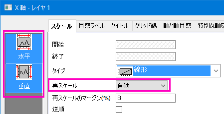
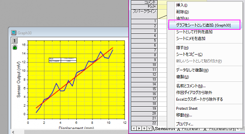

分析テンプレート
GSB-analysis-template-lesson
このレッスンでは分析テンプレートを作成して新しいデータで再使用する方法を学びます。
- 前のレッスンで保存したプロジェクトファイルを引き続き使用します。プロジェクトエクスプローラで分析テンプレートという名前の新しいフォルダを作成します。空のフォルダを開きます。
- 新しいワークブックを開き、Originのプログラムフォルダにある、Samples\Curve Fitting\Sensor01.datファイルをインポートします。
- B列を選択してから作図: マイテンプレート: My Lineを選択し、レッスン1で保存したグラフテンプレートのMy_Line.otpを利用して折れ線グラフを作成します。
- グラフウィンドウをアクティブにして、解析：フィット：線形フィットを選択します。これにより、線形フィット
ダイアログが開きます。
- フィット制御タブで切片固定チェックボックスにチェックを入れて、フィット曲線が強制的に(0,0)を通るようにします。再計算で自動を選択します。OKボタンをクリックして線形フィットを実行します。フィット曲線と結果テーブルがグラフに追加されます。
- 結果テーブルを右クリックし、コンテキストメニューから表中の値を選択します。ダイアログで傾きと補正R二乗以外のすべての内容を削除します。OK
をクリックして表を更新します。
- X軸をダブルクリックして、軸ダイアログボックスを開きます。スケールタブを開き、Ctrl
キーを押しながら、左側のリストボックス内の水平と垂直の両方を選択します。再スケール を 自動
にして、OKをクリックします。これによって、データが変更されると軸の範囲が自動的に更新されるようになります。

- グラフの凡例を選択し、削除します。
- 元のワークブックに戻ります。シートのタブのいずれか1つを右クリックし、コンテキストメニューからグラフをシートとして追加を選択し、新しいワークシート内に埋め込みグラフとして挿入します。

- これでソースデータとすべての分析結果が1つのブックに収まりました。これを分析テンプレートとして保存してみましょう。メニューからファイル:
ワークブックを分析テンプレートとして保存を選択しします。ワークブックをMy Sensor Analysis.ogwという名前で保存します。
 |
どのワークブックでも、出力シートや列のロックで示される入出力をリンクしている操作があれば、分析テンプレートとして保存することができます。最も単純なサンプルは列値の計算が実行されているシートです。
|
- ファイル: 最近使ったブックメニューコマンドを使用してMy Sensor Analysis.ogwを開きます。分析テンプレートが開きます。データシート、結果、グラフが空になっています。
- 1番目のデータ用のワークシートをアクティブにし、ヘルプ＞フォルダを開く：サンプルフォルダを選択します。そして、Curve
Fittingサブフォルダに行きます。Sensor02.datをシートへドラッグします。
- 線形フィットツールで再計算モードを自動に設定していましたので、フィット結果と埋め込みグラフが自動的に更新されます。
|
分析テンプレートは手動で1度に1つのファイルを処理するのに使用し、複数のデータファイルやデータセットの分析にはバッチ処理を使用します。詳しくはバッチ処理のチュートリアルを参照してください。 |
プロジェクトファイルを保存します。